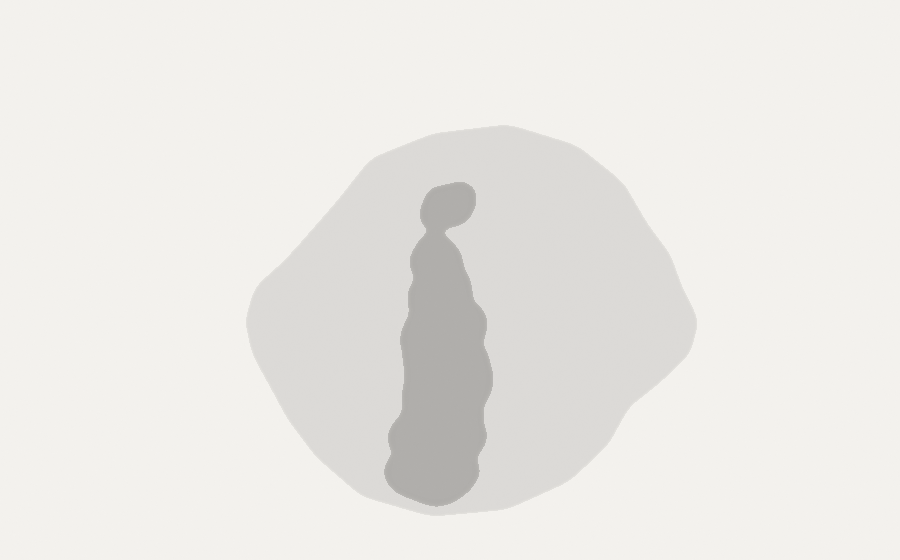
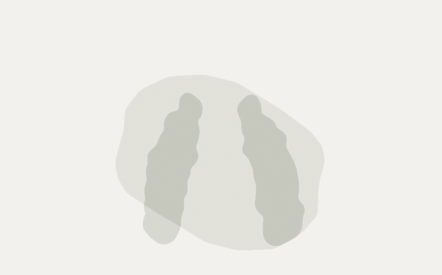
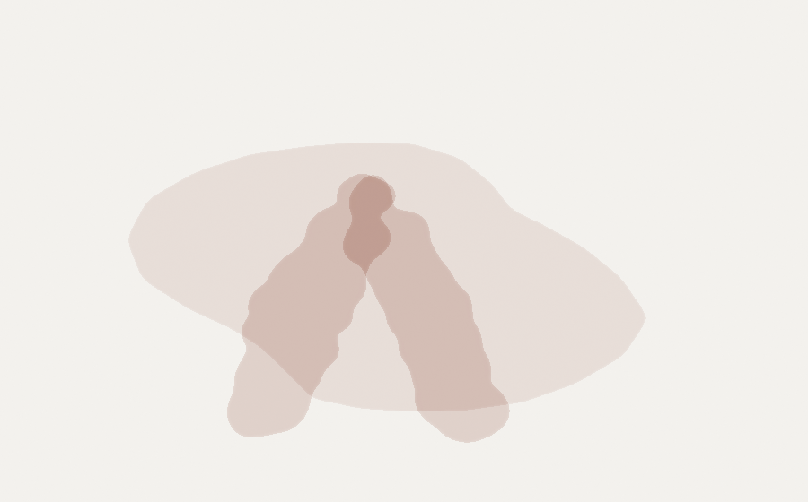
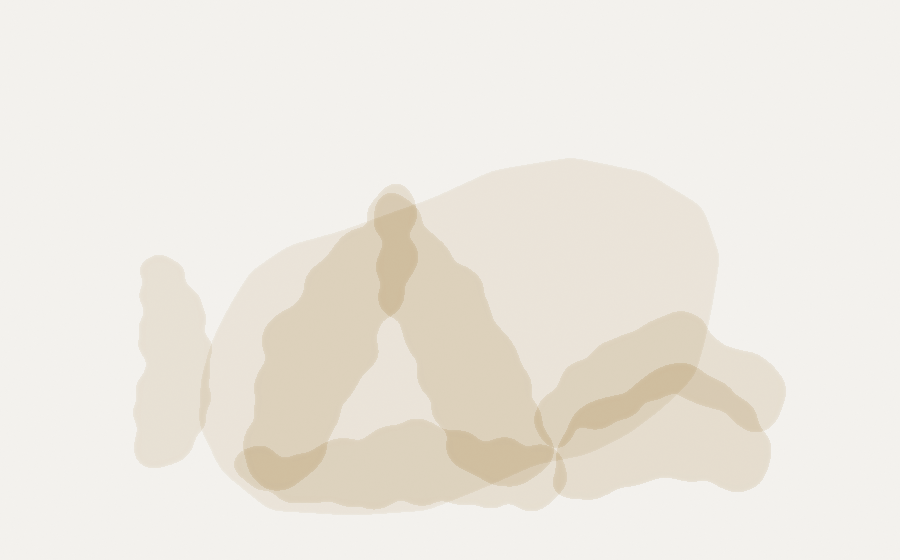
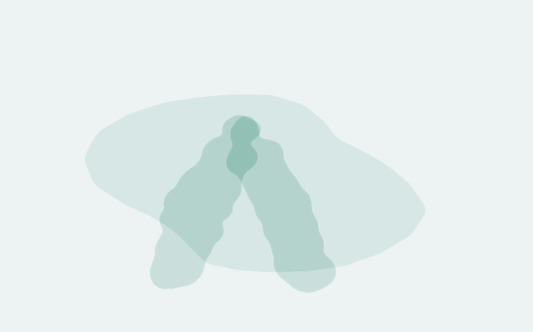
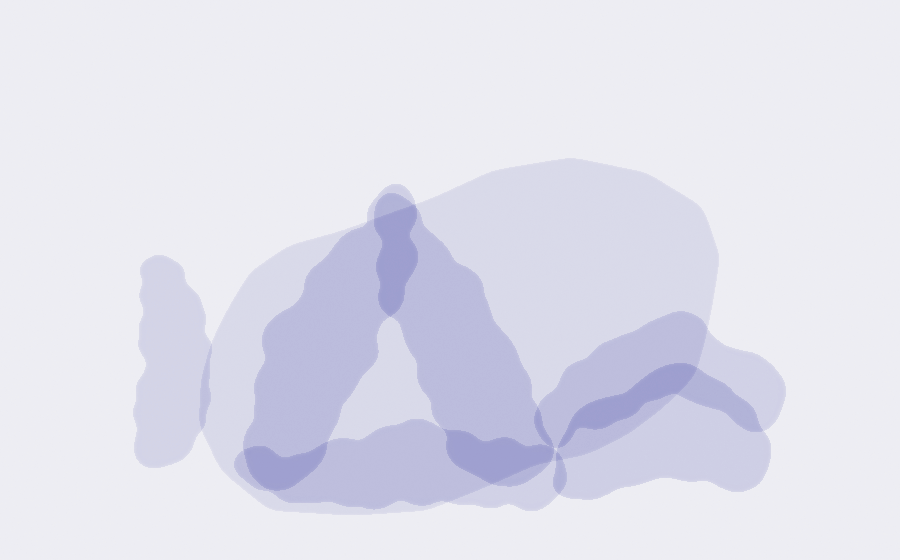

The Contact Improvisation Canon

| Curator | Eric Alessi |
|---|---|
| Subject | Contact Improvisation |
| Works | 136 |
| Free to read or watch | 78 |
| Shelves | 9 |
| Languages | 7 |
| Started | September 2026 |
| Live page | ericalessi.com |
A directory I keep growing: the texts and films that shape my practice and my teaching, on nine shelves. Each entry says what the work argues and when to reach for it. Where a work has a free, legal home, the entry links to it; sources are being added shelf by shelf. Where a work is for sale, buy it.
The undertaking is deliberately big: to gather every interesting piece of work on Contact Improvisation and share it here, for the benefit of the global CI community. If something essential is missing, write to me.

Paxton in his own words
The founder's own words, 1972–2013. Quote from these, not from commentaries.
| Work | What it argues, and when to reach for it | Source | Cost |
|---|---|---|---|
| The Grand Union | Paxton's account, written in CI's birth season, of how Grand Union became leaderless: improvisation as the only form all could join as equals. Contains the circle-falling trust exercise with its training list (eyes' judgment, skin's sensitivity, timing, trust), a first-person description of bodies colliding and blending into one falling mass, and the statement that these dancers orient by weight and touch rather than the eye. CI's blueprint in print before the name existed. If this library has one cornerstone, this is it. | free extract at Cambridge Core (full text paywalled) | Paid |
| Contact Improvisation / Solo Dancing / Grand Union | The 1975 piece is the founding technical statement: easiest pathways within mutually dependent masses, touch and balance as the base senses, the training list starting with attitude. "Solo Dancing" holds the canonical aphorisms: soloing doesn't exist, dancer plus floor is already a duet, two dancers make a quartet, weight is only yours to give. | English originals in the CQ Sourcebook, $21 at Contact Editions | Paid |
| Drafting Interior Techniques | The founding document of interior technique: how he used verbal images to focus dancers inside sensation, the small dance, the gaps where consciousness blacks out mid-roll, the "working model" mover he taught toward. Imagining a step already displaces weight. Ends with a dedication to John Cage. Read it before anything modern about attention. | buy the issue PDF from Contact Quarterly ($5) | Paid |
| Thoughts on Contact Improvisation | The deepest well of citable teaching language: gravity as the perceptual "field" with the moving point of contact as "figure"; feeling the floor through your partner's body as the principle CI rests on; the small dance introduced in 1972 so gravity could be observed working on the upright body. Plus his regret that standing has dropped out of practice, his replacement of "freedom" with "response-ability," and a sober late retraction of early utopianism. The deepest well of teaching language on any shelf here. | free full text at Danza e Ricerca (Univ. of Bologna) | Free |
| Steve Paxton: Drafting Interior Techniques | The book. The retrospective's catalogue: Bigé's "fugitive study" introduction framing Paxton's decades as patient investigations; Cvejić's "A Study in Anarchy" arguing Paxton transferred authority from persons to gravity itself; and the Godard/Bigé "Moving-moved" conversation. Sardo's foreword lands on the idea that Paxton taught what Newton couldn't: what it is to be the apple. Free and legal in full via the editor's own deposit: Zenodo, DOI 10.5281/zenodo.10695529. | free in the full 2019 book, the editor's own Zenodo deposit | Free |
| Contact Improvisation and Politics | Founder testimony: CI replaced modern dance's up/down hierarchy of weight with spirals where every direction has value; asking questions moment-by-moment is itself the politics; peripheral intelligence outruns centralized intelligence. Includes her eyewitness chronology: Magnesium seemed "for men only" until Paxton showed her the material; the Weber Gallery rehearsals were heavily videotaped and studied while still in body memory. | free to read on Contact Quarterly's CI Newsletter | Free |
| Why Standing? | Paxton on why the Stand keeps earning its place: two talks at the 2014 Breitenbush Jam, printed side by side so you can watch him interrupt… Paxton talked on two afternoons during the seven-day Breitenbush Jam in March 2014 in Oregon, on how the Stand relates to stage fright and to entrainment. For the second talk he played a recording of the first and interrupted himself to add to it. CQ prints both, Talk 1 down one side and Talk 2's extra layers down the other, so you read him working on his own thinking. Read this one standing up. | free at Contact Quarterly's Article Gallery | Free |
| Whose Dance Are You Doing | A 1982 public interview in SNDO's first year: Paxton, Lisa Nelson and Nancy Topf answering why they dance, what a dancer needs, and what a… A transcript of a video-recorded public interview at the School for New Dance Development in the year it opened. Hougée asks plain questions: why did you choose to dance, what does it take, what can a school actually teach. Paxton answers that the work is playing the senses, exploring them, finding out what they do and how they affect us, and that he only decided to become a dancer after several years of studying dance. Nelson and Topf answer alongside him in the same room. Worth it for Paxton's line about playing the senses. | free full text at Sarma | Free |
| The Origins and Value of Contact Improvisation | Paxton in 1998, telling Maura Keefe how the Oberlin men's class began: open the senses, work to the edge of vision, learn to fall, and… Paxton tells how the men's class he set during a Grand Union residency at Oberlin started as gymnastic "throwing your weight around" and turned on one question: how to keep people safe. His answer was to make the senses acute, keep the sphere around the body lively, and teach people to fall and roll so a topple agrees with the floor. He names the third partner, the momentum two people build, as the thing that leads. He also walks through the Aikido roll he studied through the 1960s. Edwards frames the episode by naming the form's consent problems and its debts to Lindy Hop and Aikido; that framing is hers, and it is worth hearing next to his. Listen for "the leader is the movement." | free audio and transcript at PillowVoices | Free |
| Steve Paxton and Bill T. Jones, in conversation with Mary Overlie | A 1983 post-show talk: Paxton on cutting away everything he knew about dance and finding "finer and finer gradations of movement,"… A full transcript of an evening where both men had just performed and Overlie asked them what their work was dealing with. Paxton answers "Analysis," and describes working with tiny, vibrating movements inside larger ones. He argues that research in an art form will look unreadable at first, and only becomes a language once people start quoting it. He presses Jones on how a performer avoids actually feeling what they pretend to feel. Jones asks whether there are "Contact people" and "classic post-Judson people," and Paxton refuses to put it on a group. Paxton in 1983, working at the small end of the scale and arguing it out in public. | free full text at Movement Research | Free |
| Talking Politics of Contact Improvisation with Steve Paxton | Paxton in 2016, asked straight out about the whiteness of the form and what it owes to intercultural politics, answering at length and on the record. A kathak-trained scholar Skypes Paxton at home in Vermont and prints the whole exchange. He talks about partnering vocabulary, who the form was built by and for, and why a culture shock in the studio is part of the point. The latest long Paxton interview on this shelf. | free published version at Brunel University's open repository | Free |
The gravity school
Where support comes from. The Floor as Sky shelf.
| Work | What it argues, and when to reach for it | Source | Cost |
|---|---|---|---|
| Moving-moved | The single most important text on this shelf. The small dance as the discovery that we stream movements that aren't ours; tonic function rooted in the infant's tonic dialogue; CI as a "parietal dance" in which grounds communicate through bodies, my body makes a parcel of Earth perceivable to you; gravity as the repressed relation with no god in any pantheon. Mutual freedom with mutual dependence. Read first. Slowly. Twice. | free PDF at HAL open archive | Free |
| The Missing Gesture | The clinical side: recovered patients missing specific gestures no test detects; "founding gestures" (pushing away, pointing, going towards) each learned in an affective situation, the capacity to say no lives in the muscles that push away; gesture born from gravitational organization (raising an arm begins in the calf). | free PDF at HAL open archive (Paris 8) | Free |
| Phenomenological Space | Tonic function as half push from the floor, half suspension toward the sky, the ground-and-sky posture formula. The hamstring lengthens when you orient to ground and sky, not when you stretch it; CI named as the direct way to renegotiate the touch taboo. | buy the issue PDF from Contact Quarterly ($5) | Paid |
| Tonic Space | The aesthetics of weight: upright posture as lifelong task (Straus), the small dance opening perception beneath volition, CI training "nomadic supports", weight given spherically to any point. Where music gives tonal space, CI substitutes tonic space: coordinates defined by weight, dancers bathed in the gravitational field instead of sound. | Emma Bigé's own site (texts + deposits) | Paid |
| Living WeightFR | The scholarly full version: postural tonus, parent-infant tonic dialogue, each partner a floor, the Earth rediscovered as a power of attraction one dialogues with, every step a modulated arc of falling. Quotes Paxton's mirror-floor workshop score, the inverted body that supports you, which is Floor as Sky stated by the founder. | free PDF from the author on Academia.edu (free login to download) | Free |
| Touch and the FallFR | Against the "shared equilibrium" cliché: equilibrium is death; the partner's job is to help you lose your verticals. Up and down become relative to the partner's body, his back a floor, a wall, a ramp. Welcoming a partner and grounding yourself are one act. The closest published cousin to what I teach. | Emma Bigé's own site (texts + deposits) | Paid |
| Horizontal Gravity | A speculative attempt to define the pull between living bodies as a second gravity, ending in Hennessy's "post/contact" (failure more than flow). | free PDF from the author on Academia.edu (free login to download) | Free |
| Leaning Bodies That ImagineES | Pandemic-era essay weaving Paxton's whole trajectory with Cavarero's "inclination": leaning toward gravity as critique of vertical, masculine rectitude. | free full text at Re-visiones (Complutense journal) | Free |
| Catching the Fall | Bigé, who wrote half this shelf, interviewing choreographer Sharon Fridman at the Ibiza Contact Festival on falling, catching, and making… Recorded under the pine trees at the Ibiza Contact Festival on 27 August 2014, straight after a workshop Fridman had taught. The subject is Contact Improvisation and choreography: what happens when a choreographer builds finished work out of the fall and the catch. Bigé's other pieces on this shelf are written arguments, and this one is a conversation, which makes it the easiest of them to start with. | free at Contact Quarterly's Article Gallery | Free |
| Automatism and Creativity in Contact Improvisation | Why the repetition of falls is where the creativity comes from: gravity stops being a force to resist and becomes a resource, and… A philosopher's argument that improvised creativity depends on automatisms built by repetition. Her section on gravity is the one for this shelf: in daily life we hold ourselves upright against gravity, and in the dance, repeated falling teaches a sensitivity to weight, giving and receiving it, until falling stops being frightening. She reads that surrender as a shift from "problem solving" to "problem finding," using Erwin Straus's idea of pathicity. The link to how I teach falls is my reading, not her claim. For anyone who has asked why we keep doing the same roll. | free full text at MDPI Philosophies | Free |

Attention & perception
What attention actually is in this dance, and how it gets trained: vision, touch, and the research behind reading a partner faster than thought.
| Work | What it argues, and when to reach for it | Source | Cost |
|---|---|---|---|
| Before Your Eyes | The other founding lineage: vision as movement practice. Four years behind a camera taught her the eyes compose the body; she learned to catch the split-second of organization before an action appears; her group practice has watchers replay a dance with their bodies, a collective perception, a dance of opinions. She credits Paxton's 1972 survival question as her seed. The journal's two-perspective format has an ancestor here. | free full text at the Sarma archive | Free |
| Restructuring the Self-Sensing | Attention-to-attention as the training; trained attention slices a fall into many decisions where beginners get one chunk. | ResearchGate (author-posted) | Paid |
| Bodyminds in Movement | CI as living lab for embodied cognition (Noë's enactive perception, Massumi's proprioceptive navigation); maps the physics-vs-chemistry split in CI's self-understanding; defends practitioner writing against neutral-spectator scholarship. | free full text at Junctions journal | Free |
| Expanding Empathic and Perceptive Awareness | Attunement (Stern's infant research) as what CI trains; the dual gaze; and mismatch-and-repair, imperfect attunement as the productive mechanism. | free full text at University of Tasmania repository | Free |
| touch + talk | Lepkoff's CI-as-question made into a performable score: dancers answer a projected question by moving, touching and talking at once. The question menu doubles as journal prompts. | free full text on ResearchGate (uploaded by the author) | Free |
| Momentum, gravity and "sensational facts" | The most compact teachable small-dance script in the set, plus Chung's fingertip "follow the one you lead" exercise with the space between fingers as third agent, and Little's attention "pop." | free paper on Academia.edu, posted by the author (free login to download) | Free |
| Real-time Authorship | The dancer authors their experience without owning the work; the Stark Smith line that Paxton transmitted CI as a frame with the middle left empty. | buy the issue PDF from Contact Quarterly ($5) | Paid |
| On Kinesic Analysis | The infant researcher Paxton cited and visited: micro-synchrony, the mother's exaggerations as the first performance, film conquering time. | publisher page at Cambridge Core (full text paywalled) | Paid |
| Dancer–Dance–Spirituality | CI's unstated spiritual register given careful language: jams as hybrid of focused-attention and open-presence meditation; joining felt as movement from a third place. | free full text on ResearchGate (uploaded by the author) | Free |
| The Sensation is the Image | Nelson's own account of how she built her sensory work, from Juilliard Saturdays to watching brain-injured infants with Bonnie Bainbridge… Nelson walks through the whole route: Juilliard's children's division every Saturday from eleven to sixteen, Bennington for a year and a half before she quit, a mime troupe, then the Open Theater, which was working on movement and sound rather than text. She ends on the two things that built the sensory work, her reading on perception and her time with Bonnie Bainbridge Cohen and brain-injured infants, where she could watch the link between a baby's movement and its desire. Where "Before Your Eyes" comes from. | free full text at Sarma | Free |
| Contact Improvisation: A Question | Lepkoff's answer to what the form is: a physical question you keep asking about your own circumstance, held in the tissues rather than in… Lepkoff reads Paxton's move as putting the body into disorienting and often emergency situations, pulling the rug out so habits cannot run and support has to be found on any surface of two moving bodies. The technique underneath, he says, is to pose and hold a question, and that questioning sits in bones, muscles, organs and nerves rather than in the verbal mind. Two lines to keep: "When I believe I know where down is, I am always wrong! Only gravity has that information," and "If Contact Improvisation is the physical act of posing a question about ones own present circumstance, then the work is ever expansive." The 2010 postscript explains why he stepped away from the label in the mid-1980s and what he thinks survives anyway. Hand this to the next person who asks you what CI is. | free on Lepkoff's own site · also free at Contact Quarterly | Free |
| Skilled performance in Contact Improvisation | What skill in CI actually is, from interviews with dancers: getting comfortable off balance, "not knowing yet," and moving between leading and… Two researchers use ethnography with CI dancers to ask how skill develops in the form. Their answer: finer awareness of your own and your partner's kinaesthetic sense, and what they call interkinaesthetic negative capability, an embodied "not knowing yet," with an ease in being off balance and waiting for the next shift to arise. They draw a parallel with how infants and caregivers learn to move together. Expertise, in their account, is the ability to slide between having agency and handing it over. Good language for the moment a student asks what "getting better" means here. | free full text at Springer (Synthese) | Free |

Consent, gender, hierarchy
The hard conversations, in writing: touch and consent, power inside a form that claims to have none, and who the room actually welcomes.
| Work | What it argues, and when to reach for it | Source | Cost |
|---|---|---|---|
| Nuances of Touch: Embodying and Communicating Nonverbal Consent in CI | The only full-length study of nonverbal consent in CI in this library (121 pages; full annotation pending). | free full text at UBC Library Open Collections | Free |
| Gender Discourses in Contact ImprovisationES | The definitive archaeology of the gender debate inside Contact Quarterly across 45 years, with a dated table of every relevant article. | free full text at Universidad de León repository | Free |
| To Lead or Be LedES | Tango's explicit roles vs CI's supposed equality: the jam's openness can amplify elite power and leave room for abuse; the Magnesium all-male origin story. | free full text at SciELO Brazil (Movimento) | Free |
| Feeling and Moving TogetherFR | The most clear-eyed insider text on CI's shadows: in-group language that discourages dissent, dress-code academicism, beginner humiliation, male-dominated teaching in female-majority communities, resolved through the small dance's community of sensing. Required reading before writing a jam's code of conduct. | free full text at HAL open archive | Free |
| Uneasy Breathing | The strongest recent challenge to "just relax into gravity": Holland and Houston-Jones's 1983 Wrong Contact Manifesto; Paxton's uninhibited "imaginary person" read as an unmarked white subject; Nodine's observation that flow is a form of privilege. Tension reframed as socially produced. | abstract at Taylor & Francis (full article USD 56) | Paid |
| [Dis]Connected | A sympathetic audit of the universal-language claim: communication is real but conditional; hierarchies re-emerge; touch can turn coercive; and a documented decline of the small dance in teaching. | free full text at Columbia Academic Commons | Free |
| Dancing AnarchyFR | Post-modern dance wasn't democratic, it was anarchist: Judson's anti-institutionalism, Grand Union's temporary autonomous zone, CI's mutualism via Kropotkin, whom Paxton cites directly. Roles must form and never congeal. | free full text at SciELO Brazil (Revista Brasileira de Estudos da Presença) | Free |
| A Physical Quest for Natural Rights | Paxton didn't remove authority from CI, he transferred it to gravity. Includes his pedagogical redirect (toward curiosity about momentum instead of prohibitions) and the letter arguing CI addresses sexism and racism by providing a proposition in which they are irrelevant. | free in the full 2019 book on Zenodo | Free |
| How the First Rule Brought #MeToo to Contact Improvisation | The article that brought the reckoning into CI's own journal of record: how the form's founding "take care of yourself" rule can offload responsibility onto the least powerful person in the room, and what communities changed after #MeToo. Pairs with her response essay "Starting by Believing Maria." The most important consent text of the last decade. | free at Contact Quarterly's Article Gallery | Free |
| Contact Improvisation: One Experience | A woman the journal calls SK wrote in for advice after a disturbing experience at a CI festival, and CQ printed the exchange, five years… A woman the journal anonymises as SK emailed Rythea Lee, whom she had never met, asking how to handle something that had happened to her at a CI festival. Contact Quarterly published the exchange. It ran in 2014, five years before Michelle Beaulieux's #MeToo article in the same journal, which is why I would read this one first. Reading the two together is my own pairing, not the journal's. | free at Contact Quarterly's Article Gallery | Free |
| Safety & Boundaries | A community's written answer to the consent problem: being in the room is not consent, consent can change mid-dance, and consent with one partner does not extend to a third. Five principles, then the practices behind each: practice consent, respect physical, sexual and emotional boundaries, keep the jam focused, take responsibility for your own safety, ask for help when a boundary is crossed. The shelf's studies describe the problem; this is one city's working rulebook. | free PDF, hosted by a Philadelphia CI organizer | Free |

Jams, scores, pedagogy
How the form gets taught, jammed and opened up to more bodies. The Brozas shelf: María Paz Brozas-Polo (Universidad de León), historian of CI in Spain, plus the Buenos Aires school, plus the scores you can run in a class.
| Work | What it argues, and when to reach for it | Source | Cost |
|---|---|---|---|
| The Aesthetic and Pedagogical Nature of JamsES | The sharpest anatomy of the jam as pedagogical device: a five-type map of what organizers think jams are for, and the documented drift toward beginner-social jams that experienced dancers abandon. | free full text at Cultura, Ciencia y Deporte | Free |
| Pedagogy of the Sensitive BodyES | A decade of CQ "Essentials" teaching scores (Chung, Nelson, Little, Keogh, Lepkoff…) read as a pedagogy of touch: deep, extended, multiple, porous, spatial, internal touch; her closing challenge that CI never worked out what vision does. | free full text at Universidad de León repository | Free |
| Accessibility in Contact ImprovisationES | Accessibility as founding principle, with the full lineage (DanceAbility, blind-dancer work, Exposed to Gravity) dated and cited, plus the honest caveat that touch remains a social barrier. | free full text at Arte y Movimiento (Universidad de Jaén) | Free |
| The Beginnings of CI in SpainES | How CI actually roots in a new country: multiple unaware seeds, migration, one journal as connective tissue. | free full text at the journal's site (RIMCAFD) | Free |
| CI and the Health Sciences | The Malta pilot: 8 weeks of CI for nursing students produced a measurable shift from self-only awareness to awareness of others' bodies. | buy the book from Cambridge Scholars (from £64.99) | Paid |
| Critical Potential · Destabilizing the Discipline · CI as CommunicationES | The Buenos Aires school, three philosophical readings: Marcuse (CI as lived non-manipulative relation), Foucault (CI destabilizing the discipline that produces docile bodies), Deleuze/Spinoza (the "third entity" as composition of relations that increases each body's power). | Menacho 2008: free full text at Memoria Académica (UNLP) · Tampini & Farina: free full text at SEDICI (UNLP repository) · Singer 2021: free full text at Dialnet | Free |
| Gestures of Contact ImprovisationFR | A museum of dancing organized around seven gestures: not-doing, weighing/carrying, falling, playing, saying, looking, touching. | the exhibition on Emma Bigé's own site | Free |
| The Underscore | Stark Smith's structure for a whole jam as one composed arc, developed from 1990 on and practiced worldwide every June as the Global Underscore. Her own page explains the practice; the famous one-page glyph sheet maps its phases in her hand-drawn symbols. The map for designing a long session. | her official Underscore page · the glyph sheet (PDF) | Free |
| Riding a Peacock Feather | A half-page score from 1977: balance a peacock feather on your palm, move only to keep it up, then pass it on. Ends with Nita Little's… Balance a peacock feather upright on your open palm, let its falling lead you, and move only to keep the two of you in balance. Then pass it to someone else, tossing it straight up or spilling it into their waiting palm. Nelson closes with a group structure Nita Little brought to a Berkeley CI class in February 1977: A moves, B joins weight, C enters to join A, B lets go and becomes a spectator, and one continuous duet travels through any number of people. The mover who stays is the feather. Twenty minutes of class, in half a page. | free full text at Sarma | Free |
| Hieroglyphs | Nancy Stark Smith teaching a pen-and-paper exercise she calls "writing from the body," filmed at Bates in 2013. Stark Smith leads an exercise you can do at home with a pen and paper. She describes it as "writing from the body." The Underscore on Shelf 5 is also drawn as glyphs, one per phase; reading this exercise as part of the same habit of drawing the dance is my own connection, not hers. Run it with a class after a jam, before anyone talks. | free on YouTube (Meta-academy Lab) | Free |
| Earthdance CI Jam Guidelines | The working jam guidelines from the US's busiest CI house: listen to others, listen to yourself, know the power in the room, keep the floor focused, tend the space. Six short sections. You can leave or end a dance at any time for any reason. Sensation is normal; pursuing it on the floor is not. Social talk happens off the dance space. Check in with partners and look after newer dancers. Read it next to Brozas on what jams are for. | free on Earthdance's site | Free |
| Framing the Gap: Contact [and] Improvisation | The editorial to the first peer-reviewed journal issue ever given to CI: forty years of Contact Quarterly and no academic issue, so two editors named the gap. Grown out of two conferences at Contact Festival Dartington. The square-bracketed [and] is the argument: the space between contact and improvisation is where the form works, traced from Paxton's "cooperation becomes the subject" to Stark Smith's gap. A map of where CI research stood in 2014. | free author copy at Falmouth University's repository | Free |
History & scenes
Where the form came from, and the unexpected rooms it reached: galleries, mourning, forests, and fifty years of scenes.
| Work | What it argues, and when to reach for it | Source | Cost |
|---|---|---|---|
| The Body as an Everyday Material | Pre-CI Paxton: why walking, why boredom, the Cunningham break. | free full text in WRECK journal (UBC) | Free |
| New forms of queer mourning | The Touching Community: CI as mourning technology for dancers lost to AIDS, the most striking case of CI beyond the studio. | Hennessy & Houston-Jones in conversation on dancing through the AIDS years (SFMOMA Open Space) free full text at Archivo Español de Arte (CSIC) | Free |
| Sensing with Trees | CI-derived solo practice with trees; directly usable on the island. | free full essay at Venti Journal | Free |
| On a journey, backwards | Late Paxton; his fluid-mass gravity mental state. | free PDF uploaded by the author on Academia.edu (free sign-in may be needed) | Free |
| Bodily DiversityES | The century-long canon-breaking arc landing on CI. | free full text at Arte, Individuo y Sociedad | Free |
| The Experiment Called Contact Improvisation | How CI rooted in the Bay Area, told through the city's own open history project: the scene, the spaces, the people who carried the form west. | read at FoundSF | Free |
| Researching Contact Improvisation | The research platform behind the anthropological CI documentary Five Ways In (Poltorak, Lynes, Brühlmann): video research, themes from community to political change, and a blog running to 2020. | researchingcontactimprovisation.com | Free |
| A Short History | One page by two people who were there: Magnesium, Bennington, the fifteen athletes, the Weber Gallery fortnight, and every participant… Magnesium at Oberlin in January 1972, eleven men throwing, catching, colliding and falling for ten minutes, then standing. Paxton meeting Leon Felder and Nita Little at Bennington that spring. June 1972, funded by Change, Inc., about fifteen of the best athletes he had met in a year or two of teaching, one week rehearsing and one week showing five hours a day at the Weber Gallery in New York, in an event called Contact Improvisation. Every participant is named. Then the 1973 West Coast tour under the name "You Come, We'll Show You What We Do," Rome that June, ReUnion in 1975, and the Contact Newsletter that same year. The origin story with the roster attached. | free full text at Sarma | Free |
| Late arrivals, filed and pending annotation | Oxford Handbook CI chapter · Proximity magazine (Sept 2004 issue) · Stay Standing (Lochhead on stillness) · Kuhlmann on improvisation in performance. | Stay Standing (Lochhead on stillness): free PDF uploaded by the author on Academia.edu (free sign-in may be needed) | Free |
| Steve Paxton (1939–2024): Contact Improvisation for Generations | The obituary that reads as history: Judson, Grand Union, the Cunningham physics, 1972, and the refusal of certification in favor of a newsletter. Short enough to hand a new dancer who asks who Paxton was. Rustad places CI inside post-modern dance and follows it across continents without turning it into a eulogy. | free at Critical Stages | Free |
| Reflections on Nancy Stark Smith | Eighteen people who danced with her, Paxton among them, writing in the month after her death: her teaching, her editing, the Underscore, her insistence the form stay open to every body. Part 1 gathers Philadelphia artists; part 2 ranges across the US and London, with Steve Paxton, Nita Little, Alito Alessi, Chris Aiken and karen nelson. The closest thing in print to the room talking about Nancy. | part 1 · part 2, both free at thINKingDANCE | Free |
Video library & directory
The films and lectures that matter, with where to watch them legally. Everything marked PAID is remarkably cheap: the entire founding film canon rents for $8 a film.
| Film / footage | What it is | Where to watch | Cost |
|---|---|---|---|
| Swimming in Gravity | A full free hour of late Paxton talking about gravity, the small dance, and what your feet are doing right now. On Contredanse's own Vimeo: vimeo.com/403600420. | see entry | Free |
| Goldberg Variations | Paxton improvising to Glenn Gould, published free on the filmmaker's own YouTube channel: Variations 1–15 · Paxton's own introduction. Variations 16–30 (same channel) is currently blocked on YouTube by a music-rights claim on the Gould recording; checked September 2026. | see entry | Free |
| Fall After Newton: the excerpts | Eleven years of Paxton and Nancy Stark Smith dancing, narrated by Paxton. The official free excerpts live on Martin Keogh's YouTube: watch the excerpts. The full 22-minute film is in the Videoda archive below. | see entry | Free |
| The Videoda Archive $8/film | Magnesium (1972), Soft Pallet, Peripheral Vision, Chute, Contact at 10th & 2nd, and the full Fall After Newton, the complete founding film record, distributed by Contact Quarterly: rent for $8 per film (48h), $25 for three years, $50 to own. Where all of this began, for the price of a coffee. | see entry | Paid |
| Material for the Spine €25 | Four-plus hours of exercises, lectures and performance documents, Paxton teaching his own system, adapted from the 2008 DVD-ROM: materialforthespine.com, €25 once, via Contredanse. | see entry | Paid |
| Force of Nature $9 | A portrait of one of improvisation's great dancers: rent for $9 on Vimeo On Demand, $30 to own. | rent or buy on Vimeo On Demand (from $9) | Paid · $9 on Vimeo On Demand, $30 to own |
| Bach Bit Improvisation, WOW Hall | Paxton improvising solo to Bach in 1991, the same body of work as the Goldberg Variations, caught live in a hall instead of a studio. Paxton improvising solo to Bach in 1991, the same body of work as the Goldberg Variations, caught live in a hall instead of a studio. Third-party upload, so the link may not live forever. | watch on YouTube (unofficial upload) | Free |
| Paxton and Gerry Overington: a duet | Paxton in a contact duet with Gerry Overington, who is completely blind: the form's claim that dancers orient by weight and touch rather than the eye, shown instead of argued. Third-party upload, so the link may not live forever; the idea it documents pairs with the accessibility shelf. | watch on YouTube (unofficial upload) | Free |
| Freiburg Contact Festival: the video archive | Twenty years of festival documentaries, curated performance films and pioneer talks, the best festival video archive in CI: the archive index. | free video archive on the Contactfestival Freiburg site | Free |
| The Poetics of Touch | A 24-minute portrait of Nancy Stark Smith, filmed at Casina Settarte in Italy. The filmmakers describe it as a portrait of Nancy Stark Smith and of Contact Improvisation as a form. Most of the films on this shelf centre Paxton; this one centres her. Show it to a student who has only seen Paxton. | free on YouTube | Free |
| An Emergent Underscore | Nancy Stark Smith explaining the Underscore to camera for 46 minutes: what it is, its phases, and the Global Underscore. Stark Smith defines the Underscore as a framework for research in improvisation, then walks through its phases one by one and talks about the Global Underscore. It is the spoken companion to the Underscore page on Shelf 5: same structure, in her voice, with time to go into detail. Watch before you hold your first long jam. | free on YouTube (Marlon Barrios Solano) | Free |
| Steve Paxton: a video amble · PA RT | Lisa Nelson's own selection of rarely seen Paxton footage, 1974 to 2014, followed by the full PA RT, the duet she and Paxton made in 1983. Nelson filmed and edited much of what survives of Paxton, so this is the editor's cut of her own archive, with farm footage between the performances. PA RT runs solo, duet, solo, duet on an open score. | both films free on Danspace Project's site | Free |

Books: the complete shelf
Every book published on Contact Improvisation that this census could verify, across seven languages, plus the books where CI is a load-bearing chapter. Compiled September 2026; tell me what is missing.
| Book | What it is, and why it belongs | Where to find it | Cost |
|---|---|---|---|
| Sharing the Dance | The founding ethnography of CI: how the form grew out of 1970s America and what it means culturally. Also in Italian (Dino Audino, 2018) and Japanese (Film Art-sha, 2000). | UW Press · Contact Editions · free to borrow at archive.org | Free |
| Contact Improvisation: An Introduction to a Vitalizing Dance Form | The standard general introduction: history, fundamentals, jam culture, interviews. | McFarland · Amazon · borrowable at archive.org | Free |
| Caught Falling | CI through the life and teaching of co-founder Nancy Stark Smith: part biography, part practice book. The most-cited CI book of the last twenty years. | Contact Editions | Paid |
| Contact Improvisation: Moving, Dancing, Interaction | The most manual-like CI book: exercises, class structures, New Dance context. Out of print in English; used copies are common. German original 1998. | Amazon (used) · free to borrow at archive.org | Free |
| Dancing Deeper Still: The Practice of Contact Improvisation | Essays from one of CI's most-traveled teachers on practice, teaching, intimacy and risk. | martinkeogh.com · Contact Editions | Paid |
| the art of waiting: essays on contact improvisation | Early essay collection preceding Dancing Deeper Still. | via the author | Paid |
| Questioning Contact Improvisation | Critical pamphlet on race, whiteness, inclusion and CI's politics. | Contact Editions · circozero.org | Paid |
| Contact Improvisation & Body-Mind Centering | Teaching manual crossing BMC developmental work with CI skills. | Contact Editions | Paid |
| Encounters with Contact | Student and teacher writings on dancing CI in college. | Contact Editions | Paid |
| CQ/CI Sourcebook, Vol. I (1975–1992) | The community's own collected primary literature, first 17 years. | Contact Editions | Paid |
| CQ/CI Sourcebook, Vol. II (1992–2007) | The second 15 years of Contact Quarterly's CI writings. | Contact Editions | Paid |
| CQ/CI Sourcebook, Vol. III (2008–2018) | The third volume, into the consent era. | Contact Editions | Paid |
| Thinking Touch in Partnering and Contact Improvisation | Fourteen scholarly essays on touch in CI and partnering forms. | publisher · Amazon | Paid |
| Gravity | The founder's short meditations on a lifetime with gravity. Also as audiobook, collector vinyl, and in French (La gravité). His book Drafting Interior Techniques lives on the Paxton shelf above. | Contredanse | Paid |
| Composing While Dancing | Practices of 26 improvisers, the CI lineage throughout. | UW Press · Contact Editions | Paid |
| I Want to Be Ready | Improvised dance as a practice of freedom; a strong CI chapter. | free to borrow at archive.org · Fulcrum (institutional login) · University of Michigan Press | Free |
| Taken by Surprise: A Dance Improvisation Reader | Twenty-one essays, including Albright's "Contact Improvisation at Twenty-Five" and Paxton. | Wesleyan · Contact Editions | Paid |
| Choreographing Difference | The body and identity in contemporary dance; major CI analysis on gender and disability. | Wesleyan | Paid |
| Engaging Bodies | Collected essays on the politics and poetics of corporeality, several on CI. | Wesleyan | Paid |
| How to Land: Finding Ground in an Unstable World | Falling, gravity and disorientation: CI-derived philosophy for general readers. | Oxford UP | Paid |
| Landscape of the Now | A topography of movement improvisation; interviews with Paxton, Nelson, Stark Smith. | Oxford UP · Contact Editions | Paid |
| Terpsichore in Sneakers | The post-modern dance context classic; chapter "Steve Paxton: Physical Things." | Wesleyan | Paid |
| The Oxford Handbook of Improvisation in Dance | The reference tome; multiple CI chapters. A library copy is the sane route. | Oxford UP | Paid |
| Body Space Image | Improvisation sourcebook widely used in CI training; companion volume A Widening Field (2004). | free to borrow at archive.org · used copies (the Dance Books site is gone) | Free |
| Sentient Performativities of Embodiment | Anthology carrying Nita Little's essay on CI and attention. As of 2026 she has no monograph of her own; this is where her book-length thinking lives. | Rowman | Paid |
| Handbook in Motion | Pre-CI improvisation classic from the form's immediate lineage. Out of print; used copies. | used via AbeBooks · Contact Editions | Paid |
| La perspective de la pommeFR | Twenty-two authors on CI's fifty years: histories, politics, practices. | publisher · Amazon.fr | Paid |
| Mouvementements: Écopolitiques de la danseFR | Philosophy of dance and ecology grown out of Bigé's CI phenomenology; CI throughout. | La Découverte | Paid |
| On the Edge / Créateurs de l'imprévuFR | Fourteen dialogues with improvisers, bilingual English/French. | Contredanse · Contact Editions | Paid |
| Nouvelles de danse #38/39: Contact ImprovisationFR | The book-length French CI special volume. Out of print; archive hunt. | Contredanse archive | Paid |
| L'Ombre du gesteFR | Anthropology of gesture in contemporary dance; fieldwork includes CI. | via booksellers free open-access book PDF from Georg Éditeur (print copies sold at georg.ch/l-ombre-du-geste) | Free |
| Contact Improvisation: Bewegen, tanzen und sich begegnenDE | The German original of the manual, with a Stark Smith text first published in German. | Amazon.de | Paid |
| Eine berührbare WeltDE | CI as a culture that can move society: stories and essays in a boxed set of six booklets. Free preview on the author's site. | direct from the author | Paid |
| Contact Improvisation: Storia e tecnicaIT | The Italian edition of Sharing the Dance. | Dino Audino | Paid |
| Cuerpos e ideas en danzaES | The Spanish-language CI monograph, from Tampini's research in the Buenos Aires school. | via IUNA/UNA Buenos Aires or the author | Paid |
| Desabituação compartilhadaPT | Contato Improvisação, play and vertigo: the Brazilian CI book, from his UFBA doctorate. | Google Books ebook · Brazilian CI network | Paid |
| コンタクト・インプロヴィゼーション — 交感する身体JP | The Japanese edition of Sharing the Dance; the only trade CI book in Japanese. Out of print, used copies common. | Amazon.co.jp | Paid |
| The Russian shelf | No commercially published Russian-language CI book exists. Community translations circulate online. The gap is itself a finding, and an invitation. | know one? use the suggestion box below | Free |
| Resistance and Support: Contact Improvisation @ 50 | The fiftieth-anniversary anthology: twenty writings, 33 contributors, a body archive and a political time capsule. Edited by the author of the Taken by Surprise and Choreographing Difference chapters on this shelf. Somatic and political readings of the form at fifty, including a road map for safer open jams. If this shelf gets one new book this year, this is it. | Oxford University Press, paperback about £29 / €44 · free review at thINKingDANCE | Paid |

The OGs' Circle
The Original Gangsters (OGs) of Contact Improvisation, Paxton, Stark Smith, Nelson and Lepkoff, who have shelves above, stood on the shoulders of other giants. This shelf introduces you to them: John Cage, Anna Halprin, the Cunningham studio, the historian who named the era, and more.
| Book | What it is, and why it belongs | Where to find it | Cost |
|---|---|---|---|
| Silence: Lectures and Writings | Cage's chance-and-indeterminacy manifesto, the root of letting a score run itself. The text Robert Dunn carried into his Cunningham-studio composition class, the one that seeded Judson. | Wesleyan University Press | Paid |
| A Year from Monday | Cage's second essay collection, indeterminacy extended into diary and social territory. | Wesleyan University Press · free to borrow at archive.org | Free |
| Moving Toward Life | Anna Halprin's own essays and scores from the open-air workshops where Forti and Rainer trained. | Wesleyan University Press | Paid |
| Making Dances That Matter | Halprin's later manual on facilitating community and ritual dance toward collective improvised events. | Wesleyan University Press | Paid |
| Dance as a Healing Art | Halprin's own account of improvisational movement as therapy, written after her cancer diagnosis. | free to borrow at archive.org | Free |
| The RSVP Cycles | The "scores" book: a theory of open structures that let groups improvise inside them. Written with Anna Halprin. Arguably the single most direct textual ancestor of CI's own idea of a score as a container for improvisation. | free to borrow at archive.org | Free |
| Handbook in Motion | Simone Forti's own dance reports and scores from her animal-movement studies. A direct precursor to CI's floor-and-weight work, now published by Nancy Stark Smith's own press. | HFS Books / Johns Hopkins University Press | Paid |
| Work 1961–73 | The first Rainer monograph: scripts, notebooks and the "No Manifesto" era. Tracks her shift from dance-object minimalism toward the anti-spectacle position. Out of stock at the reprint house; used copies via AbeBooks. | Primary Information | Paid |
| Feelings Are Facts: A Life | Rainer's memoir, reprinting in full her 1965 "No Manifesto." Thirteen refusals, "no to spectacle, no to virtuosity", the sharpest single statement of Judson's rejection of theatrical dance conventions. | free to borrow at archive.org | Free |
| Trisha Brown: Dance and Art in Dialogue, 1961–2001 | An essay and interview anthology putting Brown's own words on record. Alongside contributions from Simone Forti, Steve Paxton and Yvonne Rainer. Out of print; used copies via AbeBooks. | used copies via AbeBooks used copies on AbeBooks (from about $26) | Paid |
| Lamb at the Altar | A day-by-day account of Deborah Hay's four-month workshop with 44 trained and untrained dancers. A direct precedent for CI's own democratized-body ethos and for jam culture generally. | Duke University Press | Paid |
| My Body, The Buddhist | Nineteen short chapters of radical present-moment attention to the body. Close in spirit to CI's own somatic listening practice. | Wesleyan University Press | Paid |
| Using the Sky: A Dance | A journal-format account of four dances that functions itself as a score. Hay's mature articulation of choreography-as-instruction-set, a close cousin of CI's own scored structures. | Routledge | Paid |
| Changes: Notes on Choreography | Cunningham's own working notebooks, chance operations structuring dance independent of music. Steve Paxton danced in Cunningham's company 1961–64, overlapping with his Judson work, putting Cage's chance methods directly inside CI's founder's own training. | Artbook / D.A.P. | Paid |
| Robert Ellis Dunn's journal writings | The composition teacher whose class trained Paxton, Rainer and Forti together. Dunn never published a book. His 1960–62 classes at the Cunningham studio are the direct seedbed of Judson, and so of Contact Improvisation itself. | free at Movement Research | Free |
| Terpsichore in Sneakers | The book that named and canonized "post-modern dance" as a category. The standard first history to hand a CI student who wants the scene's before-and-after context. | Wesleyan University Press | Paid |
| Democracy's Body: Judson Dance Theater, 1962–1964 | A granular, interview-based history of the Judson years specifically. Documents how Robert Dunn's class, held at the Cunningham studio, became the actual seedbed of the collective. | Duke University Press | Paid |
| Improvisation: Its Nature and Practice in Music | The one canonical book on improvisation as its own subject, across genres. Not connected to CI by personnel, but the reference point any CI teacher reaching for a parallel discipline's theory of improvisation itself will land on. | Da Capo Press · earlier edition free to borrow at archive.org | Free |
Anything missing?
Suggest a work: title, author, and where it lives. eric@perpetualnurture.com.
Fuel my curiosity!